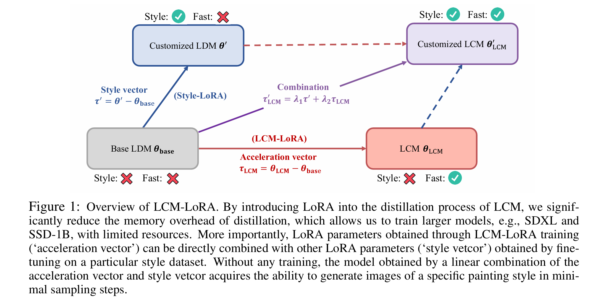
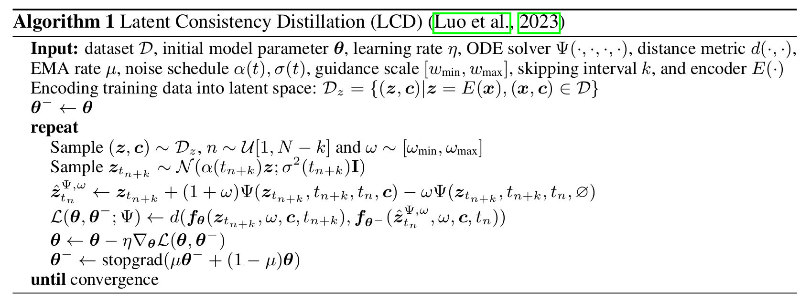
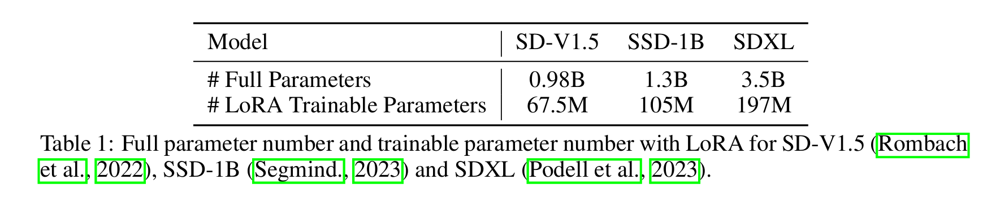
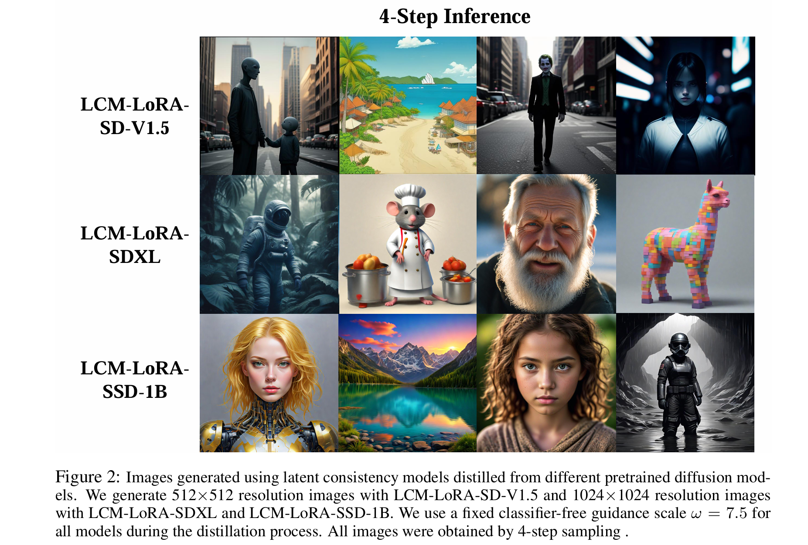
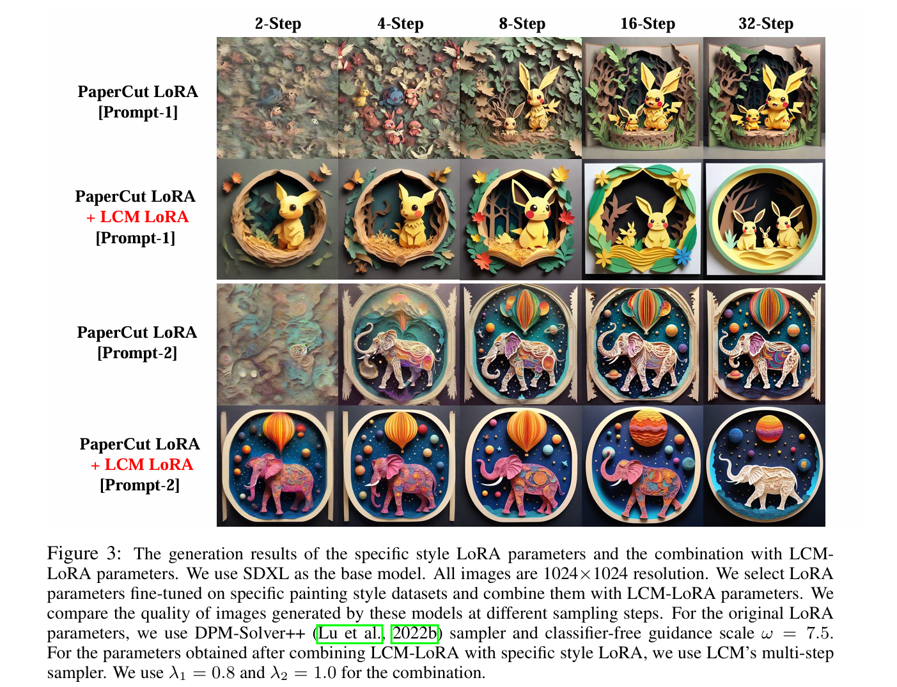

全文翻译
摘要
潜在一致性模型（LCMs）（Luo 等人，2023）在加速文本到图像生成任务方面取得了令人瞩目的性能，仅需极少的推理步骤就能生成高质量图像。LCMs 由预训练的潜在扩散模型（LDMs）蒸馏而来，仅需约 32 个 A100 GPU 训练小时。本报告从两个方面进一步拓展了 LCMs 的潜力：首先，通过将 LoRA 蒸馏应用于 Stable-Diffusion 模型（包括 SD-V1.5（Rombach 等人，2022）、SSD-1B（Segmind.，2023）和 SDXL（Podell 等人，2023）），我们将 LCM 的适用范围扩展到更大的模型，同时显著降低了内存消耗，实现了更优异的图像生成质量。其次，我们将通过 LCM 蒸馏获得的 LoRA 参数确定为一种通用的 Stable-Diffusion 加速模块，并命名为 LCM-LoRA。LCM-LoRA 无需训练即可直接嵌入到各种 Stable-Diffusion 微调模型或 LoRAs 中，因此成为适用于多种图像生成任务的通用加速器。与之前的数值 PF-ODE 求解器（如 DDIM（Song 等人，2020）、DPM-Solver（Lu 等人，2022a；b））相比，LCM-LoRA 可被视为一种具有强泛化能力的插件式神经 PF-ODE 求解器。项目页面：https://github.com/luosiallen/latent-consistency-model。
1 引言
 |
|---|
| 图1: 通过将 LoRA 引入 LCM 的蒸馏过程，我们显著降低了蒸馏的内存开销，这使得我们能够在资源有限的情况下训练更大的模型，例如 SDXL 和 SSD-1B。更重要的是，通过 LCM-LoRA 训练获得的 LoRA 参数（即 “加速向量”）可以直接与在特定风格数据集上微调得到的其他 LoRA 参数（即 “风格向量”）相结合。无需任何额外训练，通过加速向量和风格向量的线性组合得到的模型就能获得以最少采样步骤生成特定绘画风格图像的能力。 |
潜在扩散模型（LDMs）（Rombach 等人，2022）在从文本、草图等各种输入生成高度细节化和富有创意的图像方面发挥了关键作用。尽管取得了成功，但 LDMs 固有的缓慢反向采样过程阻碍了实时应用，影响了用户体验。当前的开源模型和加速技术尚未填补在标准消费级 GPU 上实现实时生成的空白。加速 LDMs 的努力大致分为两类：第一类是采用先进的 ODE 求解器，如 DDIM（Song 等人，2020）、DPM-Solver（Lu 等人，2022a）和 DPM-Solver++（Lu 等人，2022b），以加快生成过程。第二类策略是对 LDMs 进行蒸馏以简化其功能。ODE 求解器方法虽然减少了所需的推理步骤数量，但仍需要大量的计算开销，尤其是在结合无分类器引导（Ho & Salimans，2022）时。同时，像 Guided-Distill（Meng 等人，2023）这样的蒸馏方法尽管前景广阔，但由于其密集的计算需求而面临实际应用限制。在 LDM 生成图像的速度和质量之间寻求平衡仍然是该领域的一大挑战。
最近，受一致性模型（CMs）（Song 等人，2023）启发的潜在一致性模型（LCMs）（Luo 等人，2023）应运而生，作为图像生成中采样速度慢问题的解决方案。LCMs 将反向扩散过程视为一个增强的概率流 ODE（PF-ODE）问题来处理。它们创新性地在潜在空间中预测解决方案，绕过了通过数值 ODE 求解器进行迭代求解的需求。这使得高分辨率图像的合成效率显著提升，仅需 1 到 4 个推理步骤。此外，LCMs 在蒸馏效率方面表现突出，仅需 32 个 A100 训练小时即可实现少步骤推理。
在此基础上，潜在一致性微调（LCF）（Luo 等人，2023）被开发出来，作为一种无需从教师扩散模型开始就能微调预训练 LCMs 的方法。对于特定数据集（如动漫、照片写实或幻想图像数据集），还需要额外的步骤，例如采用潜在一致性蒸馏（LCD）（Luo 等人，2023）将预训练的 LDM 蒸馏为 LCM，或者使用 LCF 直接微调 LCM。然而，这种额外的训练可能会阻碍 LCMs 在各种数据集上的快速部署，从而引出一个关键问题：能否在自定义数据集上实现无需训练的快速推理。
为了回答上述问题，我们引入了 LCM-LoRA，这是一种通用的无需训练的加速模块，可直接嵌入到各种 Stable-Diffusion（SD）（Rombach 等人，2022）微调模型或 SD LoRAs（Hu 等人，2021）中，以支持少步骤的快速推理。与早期的数值概率流 ODE（PF-ODE）求解器（如 DDIM（Song 等人，2020）、DPM-Solver（Lu 等人，2022a）和 DPM-Solver++（Lu 等人，2022b））相比，LCM-LoRA 代表了一类新型的基于神经网络的 PF-ODE 求解器模块。它在各种微调的 SD 模型和 LoRAs 上展现出强大的泛化能力。
2 相关工作
一致性模型 Song 等人（2023）展示了一致性模型（CMs）的显著潜力，这是一类新型生成模型，在不牺牲输出质量的前提下提高了采样效率。这些模型采用一致性映射技术，巧妙地将常微分方程（ODE）轨迹上的点映射到其起点，从而实现快速的一步生成。他们的研究专门针对 ImageNet 64x64（Deng 等人，2009）和 LSUN 256x256（Yu 等人，2015）上的图像生成任务，证明了 CMs 在这些领域的有效性。进一步推动该领域发展的是，Luo 等人（2023）在文本到图像合成领域开创了潜在一致性模型（LCMs）。通过将引导反向扩散过程视为增强型概率流 ODE（PF-ODE）的求解问题，LCMs 能够在潜在空间中熟练地预测此类 ODE 的解。这种创新方法大幅减少了对迭代步骤的需求，从而能够从文本输入快速生成高保真图像，并在 LAION-5B-Aesthetics 数据集（Schuhmann 等人，2022）上树立了新的最先进性能标准。
参数高效微调 参数高效微调（PEFT）（Houlsby 等人，2019）能够针对特定任务定制现有模型，同时限制需要重新训练的参数数量。这降低了计算负载和存储需求。在 PEFT 涵盖的各种技术中，低秩适应（LoRA）（Hu 等人，2021）表现突出。LoRA 的策略是通过整合低秩矩阵来训练少量参数，这些矩阵简洁地表示了模型权重在微调时所需的调整。在实践中，这意味着在特定任务优化过程中，仅学习这些矩阵，而大部分预训练权重保持不变。因此，LoRA 显著减少了需要修改的参数数量，从而提高了计算效率，并允许用少得多的数据对模型进行优化。
预训练模型中的任务算术 任务算术（Ilharco 等人，2022；Ortiz-Jimenez 等人，2023；Zhang 等人，2023）已成为增强预训练模型能力的一种重要方法，为权重空间的直接编辑提供了一种经济高效且可扩展的策略。通过将不同任务的微调权重应用于模型，研究人员可以提高模型在这些任务上的性能，或者通过否定它们来诱导遗忘。尽管前景广阔，但对任务算术的全部潜力及其潜在原理的理解仍处于积极探索阶段。
3 LCM-LoRA
3.1 用于 LCM 的 LoRA 蒸馏
潜在一致性模型（LCM）（Luo 等人，2023）采用单阶段引导蒸馏方法进行训练，它利用预训练自编码器的潜在空间将引导扩散模型蒸馏为 LCM。这一过程涉及求解增强型概率流 ODE（PF-ODE），这是一种数学公式，可确保生成的样本遵循能产生高质量图像的轨迹。蒸馏过程的重点是在显著减少所需采样步骤数量的同时，保持这些轨迹的保真度。该方法包含诸如跳步技术等创新手段以加快收敛速度。潜在一致性蒸馏（LCD）的伪代码如算法 1 所示。

由于潜在一致性模型（LCM）的蒸馏过程是在预训练扩散模型的参数基础上进行的，因此我们可以将潜在一致性蒸馏视为扩散模型的微调过程。这使我们能够采用参数高效的微调方法，例如 LoRA（低秩适应）（Hu 等人，2021）。LoRA 通过应用低秩分解来更新预训练权重矩阵。给定一个权重矩阵 $W_0 \in \mathbb{R}^{d×k}$，其更新表示为 $W_0 + \Delta W = W_0 + BA$，其中 $B \in \mathbb{R}^{d×r}$，$A \in \mathbb{R}^{r×k}$，且秩 $r \leq \min(d, k)$。在训练过程中，$W_0$ 保持不变，仅对 A 和 B 应用梯度更新。对于输入 $x$，修改后的前向传播为：
在这个方程中，h 表示输出向量，$W_0$ 和 $\Delta W = BA$ 的输出在与输入 $x$ 相乘后相加。通过将完整的参数矩阵分解为两个低秩矩阵的乘积，LoRA 显著减少了可训练参数的数量，从而降低了内存使用率。表 3.1 对比了完整模型的总参数数量与使用 LoRA 技术时的可训练参数数量。显然，在 LCM 蒸馏过程中融入 LoRA 技术后，可训练参数的数量大幅减少，有效降低了训练的内存需求。
 |
|---|
| 表 1：SD-V1.5（Rombach 等人，2022）、SSD-1B（Segmind.，2023）和 SDXL（Podell 等人，2023）的完整参数数量和使用 LoRA 时的可训练参数数量。 |
Luo 等人（2023）主要对基础稳定扩散模型进行蒸馏，例如 SD-V1.5 和 SD-V2.1。我们将这一蒸馏过程扩展到了更强大的模型，这些模型具有更强的文本到图像生成能力和更多的参数，包括 SDXL（Podell 等人，2023）和 SSD-1B（Segmind.，2023）。我们的实验表明，LCD 范式能够很好地适应更大的模型。不同模型的生成结果如图 2 所示。
 |
|---|
| 图 2：使用从不同预训练扩散模型蒸馏得到的潜在一致性模型生成的图像。我们使用 LCM-LoRA-SD-V1.5 生成 512×512 分辨率的图像，使用 LCM-LoRA-SDXL 和 LCM-LoRA-SSD-1B 生成 1024×1024 分辨率的图像。在蒸馏过程中，我们为所有模型使用固定的无分类器引导尺度 $\omega = 7.5$。所有图像均通过 4 步采样获得。 |
3.2 作为通用加速模块的 LCM-LoRA
基于参数高效微调技术（如 LoRA），人们可以在大幅降低内存需求的情况下微调预训练模型。在 LoRA 框架内，得到的 LoRA 参数可以无缝集成到原始模型参数中。在 3.1 节中，我们论证了将 LoRA 应用于潜在一致性模型（LCMs）蒸馏过程的可行性。另一方面，人们可以在自定义数据集上进行微调以用于特定的任务导向型应用。目前有大量的微调参数可供选择和使用。我们发现，LCM-LoRA 参数可以直接与在特定风格数据集上微调得到的其他 LoRA 参数相结合。这种组合产生的模型能够以最少的采样步骤生成特定风格的图像，且无需任何进一步的训练。如图 1 所示，我们将 LCM-LoRA 微调参数记为 $\tau_{LCM}$（即“加速向量”），将在自定义数据集上微调得到的 LoRA 参数记为 $\tau’$（即“风格向量”），我们发现可以通过以下方式得到一个能生成自定义图像的 LCM：
其中，
是加速向量 $\tau_{LCM}$ 和风格向量 $\tau’$ 的线性组合。这里的 $\lambda_1$ 和 $\lambda_2$ 是超参数。特定风格 LoRA 参数及其与 LCM-LoRA 参数组合的生成结果如图 3 所示。需要注意的是，我们没有对组合后的参数进行进一步训练。
 |
|---|
| 图 3：特定风格 LoRA 参数以及其与 LCM-LoRA 参数组合的生成结果。我们使用 SDXL 作为基础模型。所有图像均为 1024×1024 分辨率。我们选择在特定绘画风格数据集上微调得到的 LoRA 参数，并将其与 LCM-LoRA 参数相结合。我们比较了这些模型在不同采样步骤下生成图像的质量。对于原始 LoRA 参数，我们使用 DPM-Solver++（Lu 等人，2022b）采样器和无分类器引导尺度 $\omega = 7.5$。对于 LCM-LoRA 与特定风格 LoRA 组合后得到的参数，我们使用 LCM 的多步采样器。组合时我们使用 $\lambda_1 = 0.8$ 和 $\lambda_2 = 1.0$。 |
4 结论
我们提出了 LCM-LoRA，这是一种适用于 Stable-Diffusion（SD）的通用无需训练的加速模块。LCM-LoRA 可作为一个独立且高效的基于神经网络的求解器模块，用于预测 PF-ODE 的解，能够在各种微调的 SD 模型和 SD LoRAs 上实现少步骤的快速推理。在文本到图像生成任务上的大量实验已经证明了 LCM-LoRA 强大的泛化能力和优越性。
5 贡献与致谢
本研究基于 Simian Luo 和 Yiqin Tan 的潜在一致性模型（LCMs）（Luo 等人，2023）展开。在 LCMs 的基础上，Simian Luo 编写了原始的 LCM-SDXL 蒸馏代码，并与 Yiqin Tan 共同主要完成了本技术报告。Yiqin Tan 发现了 LCM 参数的算术特性。Suraj Patil 首次完成了 LCM-LoRA 的训练，发现了其强大的泛化能力，并主导了大部分训练工作。Suraj Patil 和 Daniel Gu 对原始的 LCM-SDXL 代码库进行了出色的重构，提高了训练效率，并将其无缝集成到 Diffusers 库中。Patrick von Platen 对本技术报告进行了修订和润色，并将 LCM 集成到 Diffusers 库中。Longbo Huang、Jian Li、Hang Zhao 共同指导了原始 LCMs 论文的研究，并对本技术报告进行了润色。我们还要感谢 Apolinário Passos 和 Patrick von Platen 制作了出色的 LCMs 演示和部署版本。同时感谢 Sayak Paul 和 Pedro Cuenca 在文档撰写方面提供的帮助，以及 Radamés Ajna 制作的演示内容。我们感谢 Hugging Face Diffusers 团队提供的计算资源支持我们的实验。最后，我们珍视 LCM 社区成员富有洞察力的讨论。